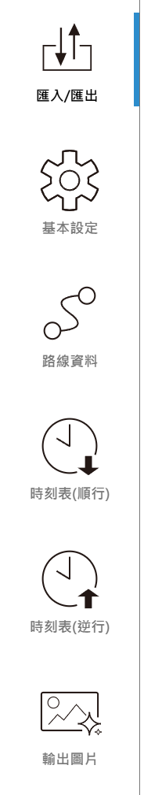

流程
網站提供簡單易上手的運行圖製作程式，您只需要準備以下兩樣東西，即可開始製作：
- 路線的站名和累計里程數
- 通過該路線的時刻表（只需發車時刻即可）
以上兩種資料，都支援兩種輸入方式：手動輸入或匯入檔案，網站推薦後者。
製作頁面的左側有六個分頁，由上到下大致就是製作的順序：

| 分頁 | 用途 |
|---|---|
| 匯入/匯出 | 匯入準備好的檔案，或把目前的進度存成檔案 |
| 基本設定 | 調整顏色、圖片大小、文字等外觀 |
| 路線資料 | 輸入或檢查站名與里程 |
| 時刻表(順行) | 輸入或檢查順行列車的時刻 |
| 時刻表(逆行) | 輸入或檢查逆行列車的時刻 |
| 輸出圖片 | 產生運行圖並下載 |
步驟一：路線資料
使用匯入
確認檔案都按照格式填妥後：
- 選匯入/匯出分頁
- 在匯入/匯出路線資料這一行的右邊，選取檔案，再按下匯入即完成
匯入後，網站會自動把資料填進「路線資料」頁面，並建立空白的時刻表。
手動輸入
- 選路線資料分頁
- 依提示輸入站名與累計里程
- 按下生成，網站會檢查里程，並將您的資料做成可供輸入的時刻表表格
其他操作細節、使用上的其他問題請見此頁。
步驟二：時刻表
路線資料必須先填妥，再輸入或匯入時刻表。
時刻表分成順行、逆行兩份。順行代表站序與路線資料的順序相同，逆行代表站序與路線資料的順序相反。
使用匯入
確認檔案都按照格式填妥後：
- 選匯入/匯出分頁
- 在匯入/匯出順行列車資料（或逆行）的右邊選取檔案，再按下匯入即完成。只有發車時刻的檔案，請用「發車時刻」那一行匯入；同時有到站和發車時刻的檔案，請用「到發時刻」那一行匯入。
- 到時刻表分頁檢查一遍
手動輸入
- 選時刻表(順行)或時刻表(逆行)分頁
- 依提示輸入車次與各站時刻
- 點擊車次下方的色條，可以設定列車名與線條顏色
- 檢查有沒有紅底的格子，紅底代表輸入的時刻格式不正確，該格不會被採用
其他操作細節請見此頁。
步驟三：調整外觀（選填）
到基本設定分頁，可以調整列車顏色、圖片比例、顯示的時間範圍、文字大小等。不調整也可以直接使用預設值。詳情請見此頁。
步驟四：輸出圖片
全數輸入完成後，到輸出圖片分頁，點選最上方的輸出結果。等待幾秒（等待時間和車站數、班次數成正比），運行圖就會顯示在下方。按下下載SVG圖檔即可下載。詳情請見此頁。
存檔
網站不會幫您存檔
本網站完全免費，所有資料都只存在您的瀏覽器裡。關閉網頁或重新整理後，資料就會消失。
工作到一半需要存檔時，請使用匯出功能：
- 選匯入/匯出分頁
- 在最下面的匯入/匯出全部資料這一行，填入檔名（選填），按下匯出全部
這個檔案包含路線、順逆行時刻表和所有設定。下次回來時，在同一行選取這個檔案並按下匯入全部，就能接著做。其他匯出方式請見如何匯入、匯出。